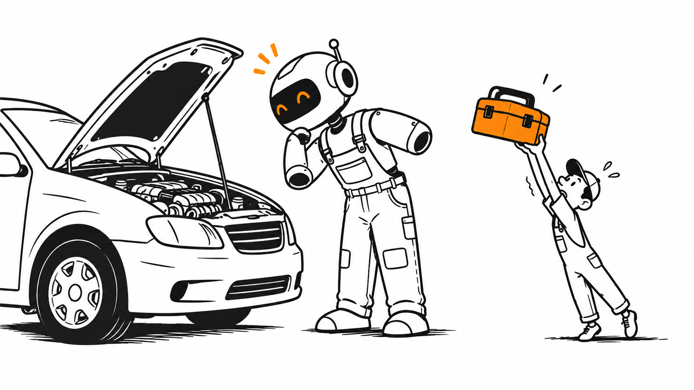

Working in
the Age of AI
How We Work with AI
AI as a New Coworker
วันนี้ให้ AI ช่วยอะไรไปแล้วบ้าง?
นึกถึงงานจริงหนึ่งอย่าง แล้วเล่าให้คนข้าง ๆ ฟังสั้น ๆ
ถามขอคำตอบ
ร่างช่วยเริ่มต้นงาน
สรุปย่อยข้อมูลยาว ๆ
ลงมือใช้เครื่องมือทำงานต่อ
💬มีใครเคยให้ AI เปิดไฟล์หรือทำงานหลายขั้นแทนเราแล้วบ้าง?
AI เริ่มลงมาช่วยทำงานจริงแล้ว
เมื่อก่อนเราถาม AI แล้วเอาคำตอบไปทำต่อเอง
ตอนนี้บางตัวเปิดไฟล์ ใช้เครื่องมือ แล้วส่งงานกลับมาให้เราตรวจได้
💡ลองนึกว่ามีเพื่อนร่วมทีมใหม่ เก่งนะ แต่ยังไม่รู้ว่าทีมเราทำงานกันยังไง
AI 101
ศัพท์ใหม่น้อยที่สุด เพื่อคุยกันรู้เรื่อง
ศัพท์ AI ที่เจอบ่อย เอาแค่พอคุยรู้เรื่อง
Artificial Intelligenceชื่อรวมกว้าง ๆ ของระบบที่ทำงานคล้ายใช้ความคิดคน
Machine Learningเห็นข้อมูลเยอะ ๆ แล้วจับแพตเทิร์น
Generative AIสร้างข้อความ ภาพ หรือโค้ดใหม่ให้เรา
Large Language Modelสมองที่คุยและทำงานกับภาษาเป็นหลัก
Multimodal AIอ่านได้หลายแบบ เช่น ข้อความกับรูป
Agentic AIรับเป้าหมาย แล้วใช้เครื่องมือทำงานต่อ
🧠Agent หลายตัวก็ใช้ GenAI อยู่ข้างในนั่นแหละ
โจทย์เดียวกัน AI ช่วยได้หลายแบบ
“อยากให้ทีมจัดการ Task ง่ายขึ้น”
Automationตั้งกฎไว้ พอครบเงื่อนไขก็เปลี่ยน status ให้
Machine Learningดูงานเก่า แล้วเดาว่างานไหนเสี่ยงส่งช้า
Generative AIช่วยร่าง user story, ข้อความบนจอ หรือโค้ด
Agentic workflowรับงาน เปิดของที่เกี่ยว ลงมือ แล้วเช็กผล
🧩สองคำนี้ซ้อนกันได้: Agent อาจใช้ GenAI เป็นสมอง
ฟรีแลนซ์มือดี กับเพื่อนร่วมทีม AI
GenAI
เราบรีฟ ได้งานกลับมา แล้วเราเป็นคนทำขั้นต่อเอง
Agentic workflow
เราบอกเป้าหมาย เปิดเครื่องมือให้ แล้ว AI ไปทำหลายขั้นก่อนมารายงาน
💡จำง่าย ๆ: ต่างกันที่งานที่มอบและเครื่องมือที่ให้ ไม่ได้แปลว่าตัวหนึ่งฉลาดกว่าเสมอ
บั๊กเดียวกัน ลองสั่งสองแบบ
ถามแบบ Chat
"Status เปลี่ยนแล้วไม่ถูกบันทึก
น่าจะเกิดจากอะไร?"
AI ช่วยเดาหรือยกตัวอย่าง ส่วนเรายังต้องไปเปิดไฟล์ลองเอง
มอบหมายแบบ Agent
"สืบสวน bug นี้ใน repo
แก้ แล้วทดสอบให้ดู"
AI เปิดไฟล์ หาเหตุ แก้ ลองรัน แล้วเอาหลักฐานมาให้ดู
🔍ถ้าเปิดไฟล์หรือรันทดสอบไม่ได้ AI ก็ช่วยได้แค่แนะนำ
อยากให้ AI ทำงานต่อเอง ต้องมีอะไร?
01Goal รู้ว่าจะส่งงานแบบไหนถึงเรียกว่าเสร็จ
02Tools มีเครื่องมือที่งานนั้นต้องใช้
03Loop ลองทำ เห็นผล แล้วแก้ทางได้
04Boundary รู้ว่าแค่ไหนทำเองได้ เมื่อไรต้องถาม
👨💻สมองตัวเดิม แต่ให้เครื่องมือกับวิธีทำงานเพิ่ม ก็กลายเป็น Agent ได้
ถ้ารับ AI เข้าทีม ต้องเตรียมอะไรให้?
🧠 Modelสมอง
📚 Contextสิ่งที่ต้องรู้เกี่ยวกับงาน
📋 Promptงานที่มอบหมายตอนนี้
📜 Instructionsกฎของทีม
📕 SkillSOP / วิธีทำงาน
🛠️ Toolเครื่องมือที่ใช้ลงมือ
🔌 MCPมาตรฐานเชื่อมต่อ
👨💻 Agentผู้รับเป้าหมายแล้วทำงาน
Anatomy of
an AI Coworker
คนเก่งก็ต้องมีบรีฟ คู่มือ และเครื่องมือ
Model: เลือกคนให้ถูกงาน
เหมือนเลือกคนมาช่วยงาน: แก้ง่าย ๆ ก็ไม่ต้องเรียก CTO ทุกครั้ง
งานเร็ว ๆจัดรูปแบบ user story 20 ข้อ
งานที่ต้องคิดหลายมุมหา edge case ของการเปลี่ยน status
งานที่ซับซ้อนออกแบบวิธีเก็บข้อมูลและย้ายของเดิม
งานที่ใช้ภาพอ่าน screenshot ที่ผู้ใช้แจ้ง bug
💡เลือกจากงานจริง: ต้องคิดลึกแค่ไหน รีบแค่ไหน งบเท่าไร
คนเก่งแค่ไหน ก็ต้องรู้เรื่องทีมก่อน
ลองรับคนเก่งมากเข้าทีม แล้วโยน Jira ให้ตั้งแต่วันแรก
เขายังไม่รู้
- ลูกค้าคือใคร
- กฎธุรกิจของทีม
- เราเคยลองอะไรไปแล้ว
และยังไม่รู้
- ข้อมูลอยู่ที่ไหน
- ข้อจำกัดของงาน
- คำว่า “เสร็จ” หมายถึงอะไร
📚เก่งแค่ไหน ถ้าไม่รู้กติกาทีม ก็มีเดาผิด
โจทย์เดียวกัน แต่เล่าให้ AI ไม่เท่ากัน
บอกแค่ว่า “เพิ่ม priority”
AI อาจสร้าง Priority: Low / Medium / High
แล้วเพิ่ม field ใหม่เอง
หน้าตาดี แต่ AI เดาของเดิมเอา
แนบ Context ที่เกี่ยวข้อง
ระบบเดิมมี P1 / P2 / P3
Task ถูกเก็บใน localStorage
ต้อง filter ตาม priority ได้
คราวนี้ AI ต่อของเดิมได้ถูกทาง
📚ส่งเฉพาะข้อมูลที่ทำให้ตัดสินใจถูก ไม่ต้องยกทั้งบริษัทมา
Prompt คือบรีฟงานรอบนี้
“ช่วยวิเคราะห์ requirement นี้”
บรีฟที่เราส่งในรอบนี้
“ระบบเราใช้ TypeScript และมี API convention แบบนี้”
เรื่องที่ควรรู้ทุกครั้งที่เข้ามาทำงาน
📋บรีฟดีช่วยเยอะ แต่ถ้าไม่มีข้อมูลกับเครื่องมือ งานก็ยังติด
สี่อย่างนี้ หน้าที่ไม่เหมือนกัน
Prompt“วันนี้ช่วยเพิ่ม priority filter”
Context“Task ใช้ P1/P2/P3 และเก็บใน localStorage”
Instructions“ห้ามแตะ production data; แจ้งก่อนเปลี่ยน schema”
Skill“ก่อนแก้ feature ให้ review requirement ตาม checklist นี้”
🏢งานวันนี้ · ความรู้ทีม · กติกา · สูตรทำงานประจำ
Skill บอกวิธีทำ · Tool ให้ลงมือ
Tool บอกว่า AI ทำอะไรได้
Skill บอกว่าควรทำงานนั้นอย่างไร
เช่น Tool เปิดไฟล์ได้ ส่วน Skill บอกว่าต้องเช็กอะไรบ้าง

🛠️รู้วิธีซ่อมรถ แต่ไม่มีประแจ ก็ยังซ่อมไม่ได้
Skill หน้าตาแบบไหน? ลองดูงาน BA
ถ้าไม่มี SOP
วันนี้ถามเรื่องผู้ใช้ พรุ่งนี้ลืมถาม บางทีกระโดดไปสร้างของเลย
ถ้ามี Skill
- อ่าน requirement
- แยก facts กับ assumptions
- ถามไม่เกิน 5 เรื่องที่เปลี่ยนแบบระบบ
- ร่าง acceptance criteria
📕เหมือนมีเช็กลิสต์ประจำทีม หยิบใช้ซ้ำได้
AI มีเครื่องมืออะไรในกระเป๋าบ้าง?
Filesอ่านและแก้ไฟล์
Terminalรันคำสั่งและ tests
Gitดู diff และประวัติ
Browserดูหน้าเว็บจริง
Searchหาข้อมูล
API / Databaseเข้าถึงระบบที่ได้รับสิทธิ์
🚧ให้เครื่องมือเท่าที่งานต้องใช้ งานเสี่ยงให้คนกดโอเคก่อน
MCP: หัวต่อให้ AI ไปหยิบของ
นึกถึงหัวต่อกลาง: อยากให้ AI ไปอ่านเอกสารหรือใช้บริการอื่น ก็มีทางเชื่อม
AI application↔MCP↔Files / API / Services
🔌MCP คือทางเชื่อม ส่วน AI ยังต้องคิดและทำงานเอง
AI จะอ่าน Jira ของทีมได้ยังไง?
ยังไม่เชื่อม
เราเปิด Jira แล้วคัดลอกข้อมูลมาแปะให้ AI ทุกครั้ง
เชื่อมผ่าน MCP server
AI เรียก tool ไปอ่านข้อมูลที่เราอนุญาต แล้วเอามาช่วยทำงาน
AI app→MCP server→ข้อมูล / บริการ
🔐ต่อสายแล้ว ก็ยังต้องดูว่า AI มีสิทธิ์เห็นอะไรบ้าง
สี่คำนี้ ใช้กับงานจริงยังไง?
Modelใครคิด?
Skillทำตามวิธีไหน?
Toolใช้ทำอะไรได้?
MCPต่อ Tool หรือข้อมูลภายนอกอย่างไร?
“ช่วย review requirement ใน Jira ตาม checklist ทีม แล้วส่งคำถามที่ต้องถามลูกค้า”
Model ช่วยคิด · Skill ให้เช็กลิสต์ · MCP ต่อ Jira · Tool เปิด issue
Prompt Is Not
Everything
บรีฟเก่งอย่างเดียว งานก็ยังพังได้
พิมพ์ Prompt เก่งอย่างเดียว ยังไม่พอ
Promptงานวันนี้
Contextความรู้เกี่ยวกับบริษัท
Instructionsกฎของทีม
SkillSOP
Toolsเครื่องมือ
Modelสมอง
🧩ให้ข้อมูลที่ใช่ บอกกติกา แล้วขอดูหลักฐานก่อนรับงาน
ลองสั่งงานสั้น ๆ ใน Claude Cowork
หยิบงานจริงของคุณหนึ่งงาน แล้วพิมพ์ตามสไตล์ตัวเอง
“ช่วยฉันเริ่มงานนี้หน่อย ก่อนลงมือ คุณต้องรู้อะไรจากฉันบ้าง?”
01ดูว่า Cowork ถามกลับเรื่องไหน
02ตอบเพิ่มเฉพาะข้อมูลที่ทำให้งานชัดขึ้น
03สังเกตว่าเราเริ่มกำหนดขอบเขตงานแล้ว
✍️นี่คือวอร์มมือ เดี๋ยวเราใช้ Cowork ทำโปรเจกต์เดียวกันทั้งห้อง
From Chat
to Agent
จากคนตอบคำถาม สู่คนที่ช่วยทำงานต่อ
แชตตอบกลับ กับ Agent ทำงานต่อ
Chat
ถาม→ตอบ→คนทำต่อ
เหมาะกับช่วยคิดหรือช่วยร่าง
Agentic workflow
เป้าหมาย→วางแผน→ใช้ Tool→ตรวจ
เหมาะกับงานที่มีหลายขั้นและขอบเขตชัด
👨💻Agent รับเป้าหมาย ใช้เครื่องมือ แล้วเอางานมาให้เราตรวจ
Agent ทำงานวนรอบยังไง?
Goal→Plan→Act→Observe→Verify
AI รับผิดชอบ
- เสนอแผน
- ใช้ tools ตามสิทธิ์
- รายงานผลและหลักฐาน
Human รับผิดชอบ
- กำหนดเป้าหมายและขอบเขต
- อนุมัติจุดเสี่ยง
- ตรวจงานสำคัญ
⚠️AI ทำงานให้ได้ แต่คนยังต้องดูว่างานใช้ได้จริงไหม
ก่อนเริ่มงาน ให้ Cowork มีโต๊ะทำงาน
โฟลเดอร์งาน
ใช้ Work in a folder เลือกโฟลเดอร์ Task App ของตัวเอง Cowork จะอ่านและเขียนไฟล์ในพื้นที่ที่เราให้สิทธิ์
กติกาประจำงาน
บอกไว้ว่า “ถามก่อนเมื่อโจทย์ไม่ชัด” และ “สร้างไฟล์เฉพาะในโฟลเดอร์นี้”
📁วันนี้เราจะเห็น Cowork สร้างไฟล์จริง ไม่ได้คุยแล้วจบในช่องตอบ
Skill หาใน Cowork ก่อน
เปิด Customize → Skills แล้วดูว่ามีอะไรให้ใช้กับงานนี้บ้าง
ของที่เปิดใช้อยู่Skill ของเรา ของทีม หรือของ Anthropic
Browse skillsหาเพิ่มจากไดเรกทอรีใน Claude
ไม่เจอที่ตรงงานลองบรีฟเองก่อน แล้วค่อยทำ Skill
ก่อนใช้จริงอ่านว่ามันจะทำอะไรและใช้อะไรบ้าง
🔎ตอนทำ BA ลองมองหา Skill ที่ช่วย review requirement หรือร่างเอกสาร
เจอ Skill แล้ว อย่าเพิ่งกดใช้ทันที
01ใครทำ? มาจากทีมเรา Anthropic หรือที่อื่น
02มันทำอะไร? อ่านคำอธิบายและขั้นตอนข้างใน
03แตะอะไร? ใช้ไฟล์หรือ Connector ตัวไหน
04ตรงโจทย์ไหม? ลองกับ Task App ตัวอย่างก่อน
👀Skill เป็นคู่มือให้ AI ทำงาน อ่านคู่มือก่อนชวนเข้าทีม
จะใช้ Skill ใน Cowork ยังไง?
เรียกตรง ๆ
พิมพ์ / แล้วเลือก Skill ที่เปิดใช้อยู่
เล่างานตามปกติ
บอกว่าอยากให้ช่วยอะไร Cowork อาจหยิบ Skill ที่ตรงมาใช้เอง
“ช่วย review บรีฟ Task App นี้ แล้วบอกคำถามที่ควรถามลูกค้าก่อนสร้าง”
📕ถ้ายังไม่มี Skill ก็ทำงานต่อด้วย prompt ธรรมดาได้
อยากทำ Skill เอง? คิดแค่สามข้อ
01ใช้เมื่อไร? เช่น ได้บรีฟที่ยังไม่ชัด
02ทำอะไร? แยกเรื่องที่รู้กับเรื่องที่กำลังเดา แล้วถามกลับ
03ส่งอะไร? คำถามสำคัญกับเกณฑ์ตรวจงาน
✍️ลองบอก Cowork ว่า “ช่วยทำขั้นตอนนี้เป็น Skill ใช้ซ้ำให้หน่อย” แล้วอ่านก่อนเปิดใช้
Skill ตัวอย่างเตรียมไว้ให้แล้ว
อยากแค่ลองใช้
ผู้สอนเปิดให้ดูว่ามันช่วยอ่านบรีฟ แล้วคืนคำถามกับเกณฑ์ตรวจงานยังไง
อยากอัปโหลดเอง
Customize → Skills → + → Create skill → Upload a skill แล้วเลือก ZIP ที่เตรียมไว้
📦ไฟล์ตัวอย่างอยู่ในชุด workshop การอัปโหลดเป็นทางเลือก ไม่ต้องหยุดทั้งห้องรอ
Skill ช่วยตรงไหน? ลองเทียบผล
บรีฟกว้าง ๆ
“ทำ Task App ให้หน่อย” แล้ว AI อาจเดาเองว่าใครใช้และข้อมูลเก็บที่ไหน
ผ่าน Skill review requirement
ได้คำถามที่ต้องถามก่อน พร้อมสิ่งที่เรากำลังสมมติ และวิธีตรวจงาน
📌Skill ช่วยให้ทีมไม่ข้ามขั้นสำคัญ แต่เรายังต้องตัดสินใจเอง
วันนี้จะใช้ Tool อะไรจริง?
Folder / Filesอ่าน brief และเขียนไฟล์งาน
Browserเปิดแอปแล้วลองกด
Skillช่วยขั้นที่ทำซ้ำ เช่น review requirement
Connector / MCPใช้เมื่อข้อมูลอยู่ในบริการอื่น
🛠️โจทย์นี้มี brief อยู่ใน folder แล้ว เลยยังไม่ต้องต่อ Jira จริง
เช็กก่อนปล่อย Cowork ลงมือ
01เลือกโฟลเดอร์ Task App ของตัวเอง
02เปิด brief.md ให้ Cowork อ่าน
03ดูว่าเครื่องมือขอสิทธิ์อะไร แล้วอนุญาตเฉพาะที่ต้องใช้
04ตั้งเป้าว่าจะได้ index.html ที่เปิดใช้ได้จริง
✅ผู้สอนทำพร้อมทุกคนบนจอเดียวกัน แล้วค่อยไปทีละช่วง
มาทำ Task App
ไปด้วยกัน
ทุกคนเล่นทุกบทบาท ใช้ Claude Cowork ตัวเดียวกันต่อเนื่อง
โจทย์ตั้งต้น มีแค่นี้
“ทีมเราอยากได้ Task Management App เล็ก ๆ ใช้ใน browser”
ยังไม่มีใครบอกว่าหน้าตาเป็นยังไง ใครใช้ หรือเก็บข้อมูลแบบไหน
❓ถ้าเป็นคุณ คุณจะให้ Cowork ทำอะไรก่อน? คิดเองก่อนดูตัวอย่างหน้าใหม่
เริ่มจากโฟลเดอร์เดียวกันในเครื่องตัวเอง
Claude Desktop→Cowork→Work in a folder
ในโฟลเดอร์มี
brief.md ซึ่งมีโจทย์หนึ่งประโยค
ปลายทางที่อยากได้
requirements.md · plan.md
design.md · index.html
test-cases.md
📁เราจะพิมพ์ต่อใน Cowork งานเดิมทีละช่วง เพื่อให้มันจำสิ่งที่ตัดสินใจไว้
เริ่มแบบ BA: ถามให้โจทย์ชัดก่อน
ลองเขียนคำสั่งของตัวเองก่อน แล้วค่อยดูตัวอย่าง
อ่าน brief.md แล้วช่วยทำตัวเป็น BA
อย่าเพิ่งสร้างแอป
บอกว่าคุณเข้าใจโจทย์ยังไง
และมีคำถามสำคัญอะไรที่ต้องถามฉันก่อน
🔎ดูว่า Cowork อ่านไฟล์จริงไหม แล้วคำถามช่วยให้เราตัดสินใจได้หรือเปล่า
BA ต่อ: ตอบคำถาม แล้วให้เขียนไฟล์
จากคำถามเมื่อกี้ เราตกลงกันว่า:
[ใส่คำตอบของคุณ]
ช่วยสรุปเป็น requirements.md ในโฟลเดอร์นี้
แยกสิ่งที่ตกลงแล้วกับสิ่งที่ยังสมมติไว้
📕ใครมี Skill review requirement ลองเรียกใช้ตรงนี้ แล้วเทียบกับผลแบบไม่ใช้ Skill
ตกลงกติกากลาง เพื่อไปต่อพร้อมกัน
ผู้ใช้คนเดียว ยังไม่ต้อง login
Taskชื่อ รายละเอียด และวันที่สร้าง
PriorityP1 / P2 / P3
StatusTo do / Doing / Done
ข้อมูลเก็บใน browser เปิดใหม่แล้วยังอยู่
งานที่ต้องทำได้เพิ่ม แก้ เปลี่ยนสถานะ และกรองรายการ
📌ไอเดียอื่นไม่ผิด แต่เพื่อไปต่อพร้อมกัน ให้ Cowork อัปเดต requirements.md ตามกติกากลางนี้
ต่อแบบ SA: ทำให้ของที่คิด สร้างได้จริง
อ่าน requirements.md ที่เพิ่งเขียน
ช่วยวางแผนทำแอปแบบง่ายที่สุด
เปิดได้ด้วย index.html ไฟล์เดียว
ไม่ใช้ package หรือ server
บอกด้วยว่าข้อมูลจะเก็บยังไง
เขียนแผนไว้ใน plan.md ยังไม่ต้องสร้างแอป
🧩SA ช่วยเลือกขอบเขตที่พอดี ไม่ต้องพาทั้งห้องไป setup framework
หยุดดูแผนก่อนกดให้สร้าง
01แผนตรงกับ requirements.md ไหม?
02มีอะไรที่ Cowork แอบเพิ่มเอง เช่น login หรือ database?
03เปิดด้วย browser ได้เลยไหม?
04เวลาข้อมูลเปลี่ยน จะยังอยู่หลัง refresh ไหม?
👀ถ้าแผนหลุด ให้สั่งแก้ plan.md ตอนนี้ จะง่ายกว่าไปแก้แอปทีหลัง
ต่อแบบ UX: ให้คนกดแล้วเข้าใจ
ใช้ requirements.md กับ plan.md
ช่วยออกแบบหน้าจอ Task App หนึ่งหน้า
อธิบายตำแหน่งปุ่มเพิ่ม Task วิธีแก้ไข
การเปลี่ยน priority/status และการกรอง
เขียนไว้ใน design.md ก่อน ยังไม่ต้องเขียนแอป
🎨ลองหา Skill ด้าน design ใน Cowork ถ้ามี แล้วดูว่ามันช่วยอะไรเพิ่ม
UX review: ลองเป็นคนใช้จริง
ลองถามตัวเอง
- เปิดมาแล้วรู้ไหมว่าต้องกดตรงไหน
- เพิ่ม Task แล้วเห็นผลทันทีไหม
- Done กับลบต่างกันชัดไหม
ถ้าติดตรงไหน
บอก Cowork ให้แก้ design.md และอธิบายเหตุผลสั้น ๆ
💬ใครมีไอเดียหน้าจอไม่เหมือนตัวอย่าง เอาแบบของตัวเองได้
ตัวอย่างภาพในหัว ก่อนลงมือสร้าง
Team Tasks4 tasks · 1 completed
+ New task◻ Review onboarding flow
P1Doing◻ Add task filters
P2To do✓ Draft acceptance criteria
Done
หน้าตาไม่ต้องเหมือนกันเป๊ะ ขอให้คนใช้รู้ว่ากดแล้วเกิดอะไร
ต่อแบบ Dev: ให้ Cowork สร้างแอป
อ่าน requirements.md, plan.md และ design.md
ช่วยสร้าง Task App เป็น index.html ไฟล์เดียว
ใช้ HTML/CSS/JavaScript ธรรมดา
เก็บข้อมูลใน browser และเปิดใช้ได้ทันที
ทำเสร็จบอกฉันว่าเปิดไฟล์ไหนและลองอะไร
🛠️ดูว่า Cowork เขียนไฟล์จริงในโฟลเดอร์ของเรา ไม่ใช่ส่งโค้ดมาให้ copy เอง
เปิดแอปของตัวเอง แล้วลองกด
01เปิด index.html ใน browser
02เพิ่ม Task แล้วเปลี่ยน priority/status
03กด refresh ดูว่าข้อมูลยังอยู่ไหม
04ถ้ามี Browser tool ให้ Cowork ช่วยลองกด แล้วเราลองเองซ้ำ
👀ไฟล์เปิดได้เป็นแค่จุดเริ่ม เราต้องลองใช้เหมือนผู้ใช้จริง
ต่อแบบ Tester: คิดเคสที่เรามักลืม
อ่าน requirements.md แล้วออก test cases
สำหรับแอปที่ Cowork เพิ่งสร้าง
รวมเคสปกติและเคสแปลก ๆ
เขียนใน test-cases.md
บอกด้วยว่าเคสไหนควรลองเองใน browser
🧪ตรงนี้ก็เป็นจังหวะดีที่จะลอง Skill ด้าน testing ถ้ามี
Tester ลงมือ: สี่อย่างที่ต้องลอง
01เพิ่ม Task ที่ชื่อว่าง ระบบเตือนหรือเปล่า?
02แก้ชื่อ Task แล้วข้อมูลใหม่อยู่ไหม?
03เปลี่ยน status แล้ว refresh ยังอยู่ไหม?
04กรอง P1 แล้วเห็นเฉพาะ P1 ไหม?
🔍เปิดแอปจริงแล้วติ๊กผลใน test-cases.md อย่าตัดสินจากคำว่า “น่าจะผ่าน”
ถ้าเจอบั๊ก ส่งกลับแบบคนทำงานจริง
ฉันลองเปลี่ยน status แล้ว refresh
ค่ากลับไปเหมือนเดิม
ช่วยหาสาเหตุใน index.html แล้วแก้
ก่อนบอกว่าเสร็จ ให้ลองทำซ้ำเคสเดิม
และบอกฉันว่าตรวจยังไง
🐛ถ้าของคุณไม่เจอบั๊ก ให้เลือก test case ที่ยังไม่มั่นใจ แล้วขอให้ Cowork ช่วยตรวจ
คำว่า “แก้แล้ว” ขอหลักฐานด้วย
Cowork ควรบอก
- บั๊กเกิดยังไง
- แก้ส่วนไหนของไฟล์
- ลองซ้ำแล้วเป็นยังไง
เราควรทำ
- เปิดแอปใหม่
- กดตามขั้นตอนเดิม
- เช็กว่าเคสอื่นยังใช้ได้
✅ให้ AI ช่วยทำได้เต็มที่ แต่คนรับงานต้องกดดูเอง
Skill ที่ควรเก็บไว้ใช้รอบหน้า
BA Skill
อ่านบรีฟที่ยังไม่ชัด แล้วคืนคำถามกับ assumption
Tester Skill
อ่าน requirement แล้วออกเคสที่ทดสอบได้
“จากวิธีที่เราทำเมื่อกี้ ช่วยร่าง Skill สั้น ๆ ที่จะใช้ซ้ำกับงานหน้า”
📕วันนี้เห็นประโยชน์จากงานจริงก่อน ค่อยตัดสินใจว่าจะสร้าง Skill เก็บไว้ไหม
เมื่อกี้ Cowork ใช้ Tool ตรงไหนบ้าง?
อ่านไฟล์brief, requirements, plan, design
เขียนไฟล์index.html และ test-cases.md
Browserเปิดหน้าแอปและลองกด
Skillสูตรที่ช่วย BA หรือ Tester
🔌ถ้าบรีฟอยู่ใน Jira แทนไฟล์ เราค่อยเพิ่ม Connector หรือ MCP ให้ไปอ่านจากที่นั่น
จบด้วยของที่เปิดใช้ได้จริง
01มี index.html ในโฟลเดอร์ของตัวเอง
02เปิดใน browser แล้วเพิ่ม Task ได้
03เปลี่ยน status หรือ priority แล้วข้อมูลยังอยู่หลัง refresh
04มี test-cases.md ที่บอกว่าอะไรผ่าน อะไรยังค้าง
🎉ไม่ต้องเหมือนแอปของผู้สอน ขอให้คุณเล่าได้ว่าตัดสินใจอะไร และตรวจอะไรมาแล้ว
The AI
Working Loop
เมื่อกี้เราเพิ่งทำครบหนึ่งรอบ จากบรีฟจนได้แอป
มองย้อนกลับไป เราทำอะไรบ้าง?
01BA ถามจนโจทย์พอจะตัดสินใจได้
02SA วางแผนที่พอดีกับเวลาและเครื่องมือ
03UX ทำให้คนใช้เข้าใจว่าจะกดอะไร
04Dev ให้ Cowork ลงมือสร้างไฟล์ที่รันได้
05Tester ลองใช้จริง เจอบั๊ก แล้วส่งกลับไปแก้
เปิดแอปของคุณดูอีกที
ลองเพิ่ม Task หนึ่งรายการ แล้วเล่าให้คนข้าง ๆ ฟังว่า AI ช่วยตรงไหน และตรงไหนคุณต้องตัดสินใจเอง
AI ช่วยทำงานได้
เราเป็นคนพางานไปถึงเส้นชัย
Why Did I Run Out
of AI Credits?
ใช้ให้คุ้ม แบบไม่เผาเครดิตเล่น
อย่าเรียก CTO มาเปลี่ยนชื่อไฟล์
งานง่ายFast / cheap model
งานปานกลางCapable model
งานยากStrong reasoning model
ทุกงานเลือกจากคุณภาพที่ต้องการ
💰งานง่ายใช้ตัวไว งานยากค่อยเรียกตัวคิดหนัก
ยัดข้อมูลเยอะ ก็จ่ายเยอะ
อ่าน memo 2 หน้า
เฉพาะส่วนที่เกี่ยวกับงานวันนี้
อ่านทั้งบริษัททุกครั้ง
อ่านเหนื่อยทั้ง AI ทั้งกระเป๋าเรา
📚ส่งเรื่องที่เกี่ยวพอ ทั้งชัดกว่าและประหยัดกว่า
ส่งให้ AI อ่านเท่าที่เกี่ยว
เพิ่ม priority filter
อ่าน requirement, component รายการ Task, data model และ test ที่เกี่ยวข้อง
มักไม่ต้องอ่าน
node_modules/, dist/, logs เก่า, รูปขนาดใหญ่ และไฟล์ที่ไม่เกี่ยว
💰ข้อมูลพอดี ๆ ช่วยให้ AI ไม่หลงทาง
AI วนแก้ไม่จบ? บอกจุดหยุดไว้
ถ้างานล้มเหลวซ้ำ ให้หยุด เก็บหลักฐาน และขอคนช่วยตัดสินใจ
- Scope ชัด
- Stop condition ชัด
- Verification ชัด
- Human checkpoint ชัด
💸วนแก้สิบรอบแต่ไม่เข้าเป้า ก็พักแล้วถามคนเถอะ
ถ้ามีงบ AI จำกัด จะจัดงานยังไง?
Model: ______________________________
Context: ______________________________
Tools: ______________________________
Steps: ______________________________
Human review: ______________________________
✅แบ่งงานเป็นช่วงสั้น ๆ แล้วดูผลก่อนสั่งต่อ